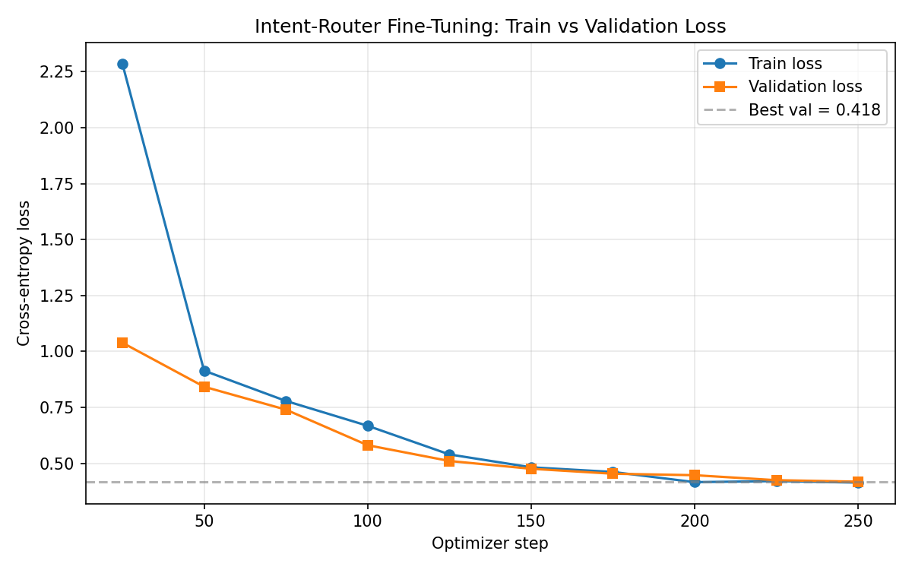
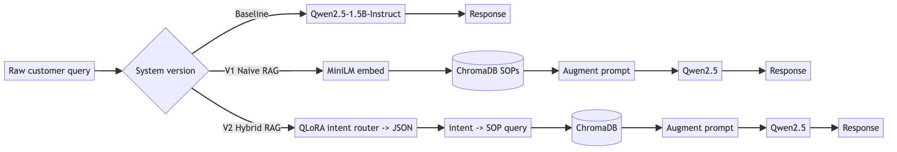

TL;DR — I built a customer-support assistant three ways, holding the base model constant, and measured each. Naive retrieval-augmented generation (RAG) actually scored below the ungrounded baseline on answer quality. A tiny fine-tuned intent router — 0.14% of the model’s parameters, trained on a free Colab T4 — fixed it and topped every quality metric. The lesson: retrieval and fine-tuning fix different problems, and “just add RAG” is not a strategy.
At a glance
| Metric | Baseline | Naive RAG | Hybrid RAG |
|---|---|---|---|
| ROUGE-1 | 0.137 | 0.122 ↓ | 0.148 |
| BLEU | 0.0044 | 0.0064 | 0.0149 (3.4×) |
| Hallucination | 36% | 26% | 26% |
| Router format adherence | — | — | 100% |
Same base model (Qwen2.5-1.5B-Instruct) across all three systems — only the architecture around it changed.
The problem nobody demos
Customer-support LLMs fail in three expensive ways:
- Hallucination — inventing policies that don’t exist (a refund window, a shipping carrier, a fee).
- Intent misread — confidently answering the wrong question.
- Policy drift — replies that quietly ignore the company’s actual standard operating procedures (SOPs).
The usual fix you hear is “ground it with RAG.” Retrieve the relevant policy document, stuff it into the prompt, and the model will stop making things up. It sounds airtight. So I decided to actually measure it — not with vibes, but with a controlled experiment.
The experiment: change one thing at a time
The trap in most “RAG vs. fine-tuning” debates is that people change the model, the data, and the pipeline all at once, then attribute the result to whatever they were rooting for. To isolate cause and effect, I held the generation model constant — Qwen2.5-1.5B-Instruct — across all three systems and changed only the architecture around it:
| System | What it is |
|---|---|
| A — Baseline | Raw LLM. No company policies. Answers from parametric memory alone. |
| B — Naive RAG | Semantic retrieval over corporate SOPs → context → same LLM. |
| C — Hybrid RAG | A fine-tuned intent router classifies the query first, then retrieval targets the right policy, then the same LLM answers. |
Everything else was locked for fairness and reproducibility:
- Deterministic decoding (
do_sample=False) so results are repeatable. - Leakage-free splits — stratified 80/10/10 with programmatic set-intersection checks between train/validation/test.
- A six-metric scorecard: Format Adherence, Intent Accuracy, ROUGE-1/L, BLEU, Consistency, and Hallucination Frequency.
- The knowledge base was a set of real corporate policy documents (refunds, returns, billing, shipping, account recovery), chunked by Markdown header.
The surprise: retrieval made it worse
Here’s the result I did not expect.
Naive RAG scored below the ungrounded baseline on answer quality — ROUGE-1 of 0.122 vs. 0.137. Adding retrieval hurt.
When I dug into the transcripts, the cause was clear and a little embarrassing for the “just add RAG” crowd. The retriever kept pulling the right document but the wrong section. Ask “when do I get my refund?” and it would surface the agent-workflow steps rather than the refund-timing rule. The model, dutifully grounded in that passage, would answer:
| Answer it produced | |
|---|---|
| ❌ Naive RAG | “Please share your order ID.” |
| ✅ What the SOP actually says | “Refunds are processed in 3–7 business days.” |
The correct rule was sitting one section away in the same file.
Retrieval alone had made the bot safe and useless. It stopped hallucinating numbers, but it also stopped answering the question. Grounding is only as good as what you ground on.
The fix: a tiny fine-tuned intent router
The failure wasn’t retrieval itself — it was unguided retrieval. So instead of letting a raw, messy query drive the vector search, I put a small classifier in front of it whose only job is to decide what the user actually wants and emit a strict JSON intent that the retriever can target.
I trained that router with QLoRA.
What LoRA / QLoRA actually is
LoRA (Low-Rank Adaptation) is a parameter-efficient fine-tuning technique. Instead of updating all of a model’s billions of weights, you freeze them and inject small trainable “adapter” matrices into a few layers. A weight update ΔW is approximated by the product of two much smaller matrices:
W′ = W + ΔW = W + B·A
where W is frozen and A, B have a small rank r (I used r = 16). You end up training a tiny fraction of the parameters. QLoRA adds 4-bit quantization of the frozen base model, so the whole thing fits on a modest GPU.
In this project the numbers were striking:
- 2.18M of 1.55B parameters trained — just 0.14%.
- Adapters applied only to the attention projections (
q_proj,v_proj). - 4-bit NF4 base,
r=16,alpha=32, on a free Colab T4. - Training converged cleanly (train loss 2.29 → 0.41; no overfitting).

Because the base weights stay frozen, the model keeps its general language ability and only specializes at the one thing I need: query → intent JSON.
How Hybrid RAG works
The pipeline is “route first, then retrieve”:
Raw query → Intent router (QLoRA → JSON) → Targeted retrieval → Grounded answer
"when's my {"intent": right SOP + right generated by the
money back?" "get_refund"} section same base LLM
The router removes the guesswork before retrieval, so the vector search lands on the correct passage instead of the plausible-but-wrong one that sank Naive RAG.

The results
Evaluated on a held-out set of 50 stratified queries:
| System | ROUGE-1 | ROUGE-L | BLEU | Hallucination |
|---|---|---|---|---|
| Baseline | 0.137 | 0.088 | 0.0044 | 36% |
| Naive RAG | 0.122 | 0.085 | 0.0064 | 26% |
| Hybrid RAG | 0.148 | 0.109 | 0.0149 | 26% |
Plus, the router itself hit 100% valid JSON (format adherence) and 88% intent accuracy. On the flagship refund category, Hybrid RAG’s ROUGE-1 climbed to 0.222.
Read across the row for Hybrid RAG and it wins on every generation quality metric — BLEU is 3.4× the baseline and 2.3× Naive RAG.
The one insight worth keeping
Decompose the numbers and a clean story falls out:
- Retrieval reduced hallucination — 36% → 26%. Grounding is what stops the model inventing facts.
- Fine-tuning drove quality — the router is what lifted ROUGE, BLEU, and actual helpfulness, by making sure retrieval grounded on the right thing.
They fix different problems. Retrieval is about not being wrong. Fine-tuning (here, routing) is about knowing what to be right about. Naive RAG gave you the first without the second — which is exactly why it went safe and evasive. You usually need both.
Being honest about limits
This is a deliberately scoped study, and it would be dishonest to oversell it:
- Small held-out set (50 queries) and a single support domain.
- Reference-based metrics (ROUGE/BLEU) are proxies, not ground truth for “helpfulness.”
- Hallucination is measured as unsupported numbers relative to retrieved context — a useful proxy, not a full factuality audit.
- A 1.5B model on a T4 is a constraint, not a recommendation for production scale.
None of that changes the direction of the finding, which is the point of a controlled comparison: the only variable that moved was the architecture.
Takeaways for anyone building LLM support
- Measure before you believe. RAG can regress quality if retrieval targets the wrong passage. Ship an eval harness before you ship the bot.
- Route, then retrieve. A cheap intent classifier in front of your vector store can matter more than a bigger model behind it.
- PEFT is genuinely accessible. Fine-tuning 0.14% of a model on a free GPU is well within reach — you don’t need a cluster to get a useful specialist.
- “Just add RAG” is not a strategy. Retrieval and fine-tuning are complementary, not interchangeable.
References & tooling
Methods:
- LoRA — Hu et al., Low-Rank Adaptation of Large Language Models (2021) — arxiv.org/abs/2106.09685
- QLoRA — Dettmers et al., Efficient Finetuning of Quantized LLMs (2023) — arxiv.org/abs/2305.14314
- ROUGE — Lin, ROUGE: A Package for Automatic Evaluation of Summaries (2004) — aclanthology.org/W04-1013
- BLEU — Papineni et al., BLEU: a Method for Automatic Evaluation of Machine Translation (2002) — aclanthology.org/P02-1040
Tooling:
- Base model — Qwen2.5-1.5B-Instruct — huggingface.co/Qwen/Qwen2.5-1.5B-Instruct
- PEFT (LoRA/QLoRA implementation) — github.com/huggingface/peft
- bitsandbytes (4-bit NF4 quantization) — github.com/bitsandbytes-foundation/bitsandbytes
- Embeddings — Sentence-Transformers
all-MiniLM-L6-v2— huggingface.co/sentence-transformers/all-MiniLM-L6-v2 - Vector store — Chroma — docs.trychroma.com
Built end-to-end on Google Colab (T4) with Qwen2.5-1.5B-Instruct, all-MiniLM-L6-v2 embeddings, ChromaDB, and QLoRA — as part of the IIITB GenAI capstone on controlled customer-support generation.